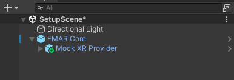
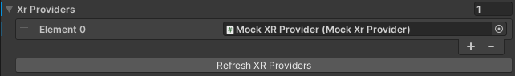
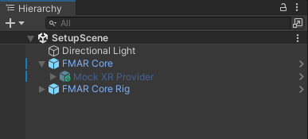

|
FirstModulAR 0.1.0
|
|
FirstModulAR 0.1.0
|
The FMAR Core package is the base package upon which all other FMAR packages rely.
Primarily, it provides a Fmar Device Manager which manages XR Providers – middle layers which essentially track input from the various disparate XR platforms (e.g. generic OpenXR controller tracking and button input, Meta Quest's representation of a tracked hand, etc.) and converts this input into a universal format which all other FMAR packages then reference.
It also provides a Core Rig prefab which uses this universal data to control an XR rig with a camera built-in.
Drag and drop the FMAR Core prefab into the scene.
You will need at least one XR Provider as a child of the FMAR Core game object. In the spirit of modularity, no XR Providers are provided by default with the core package, however XR Providers are easily accessible within their own packages. A good example XR Provider that will be worth installing in most cases is the Mock XR Provider (FMAR XR Provider -- Mock) which allows the user to control the AR/VR rig using first-person style mouse and keyboard controls in the Unity Editor. We will use the Mock XR Provider as our example in this case, but you may choose to use another XR Provider if you wish.
Install the FMAR XR Provider -- Mock package and from its prefab folder, drag and drop the Mock XR Provider prefab into the scene as a child of the FMAR Core game object.

Next, select the FMAR Core game object and in the inspector window, find the Fmar Device Manager component and click the Refresh XR Providers button. The Xr Providers list in the Fmar Device Manager component inspector should populate with the childed XR Providers. Note that you will need to refresh the component's XR Providers whenever a new XR Provider is added, or when an old one is removed.
Note that when an XR Provider is "detected" by the Device Manager, it is disabled in the hierarchy by default. This is the intended behavior – do not re-enable it. At runtime, the manager will intelligently use compiler tags to enable the correct XR Providers based on the runtime platform.

Lastly, drag and drop the FMAR Core Rig prefab into the hierarchy.
Your hierarchy should look like this.

At this point, setup should be complete. You can enter Play Mode in the editor and use mouse and keyboard controls to move the XR rig (you may need to add a cube or some other placeholder object into the world as a reference point, just so you can make sense of the space!).